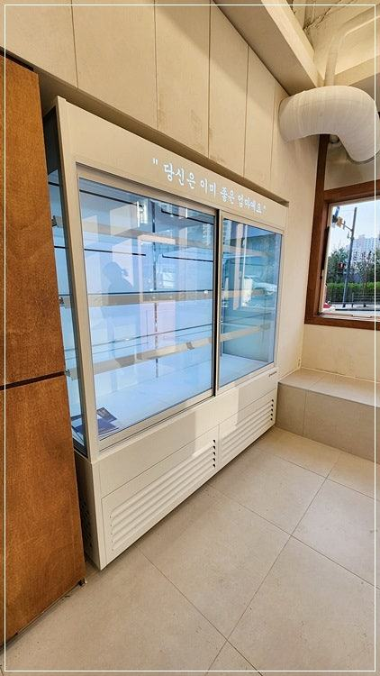

반찬(진열)쇼케이스
반찬쇼케이스 렌탈, 계약 전에 구매와 비교해 볼 것

반찬쇼케이스 렌탈은 초기 목돈 부담을 줄이는 대신 정해진 모델과 크기 안에서 골라야 하고, 계약 기간과 해지 조건, 고장 시 책임 범위를 꼼꼼히 봐야 합니다. 매장 폭에 맞는 크기가 필요하거나 오래 운영할 계획이라면 렌탈 총액과 구매·맞춤 제작 비용을 같은 기간으로 놓고 비교해 보세요.
안녕하세요. 반찬가게 진열 냉장고를 매장에 맞춰 직접 만드는 한성쇼케이스입니다.
반찬가게 창업을 준비하시는 사장님들께서 요즘 자주 물어보시는 것이 렌탈입니다. "처음부터 큰돈 들이기 부담스러운데 매달 나눠 내는 게 낫지 않을까요?" 충분히 합리적인 고민입니다.
다만 반찬쇼케이스는 매일 문을 여닫고 국물 반찬까지 담는 장비라, 계약서에 적힌 조건 하나하나가 몇 년간 운영에 영향을 줍니다.
월 납부액만 보고 결정하면 나중에 예상하지 못한 부분에서 불편이 생길 수 있습니다.
오늘은 반찬쇼케이스 렌탈을 고민하실 때 계약 전에 확인할 것들과, 구매나 맞춤 제작과 비교하는 방법을 정리해 보겠습니다.
1. 렌탈이 맞는 경우
렌탈의 가장 큰 장점은 초기 목돈 부담을 나눌 수 있다는 점입니다. 창업 초기 자금을 인테리어나 첫 재료 매입에 먼저 써야 하는 상황이거나, 시범 운영처럼 짧은 기간만 장비가 필요하다면 렌탈이 맞을 수 있습니다.
또 제공되는 표준 모델이 우리 매장 자리와 진열량에 잘 맞는다면 렌탈의 단점이 크게 드러나지 않습니다.
결국 핵심은 내 매장에 맞는 크기와 구성이 렌탈 목록 안에 있느냐입니다.
- 초기 자금이 빠듯한 경우
- 짧은 기간만 필요한 경우
- 표준 모델이 자리에 맞는 경우
2. 계약 전에 확인할 조건
가장 먼저 계약 기간과 중도 해지 조건을 확인하세요. 매장 이전이나 업종 변경으로 장비가 필요 없어졌을 때 위약금이 얼마나 되는지, 남은 기간 금액을 한 번에 내야 하는지 계약서에서 직접 확인하셔야 합니다.
다음은 고장 시 책임 범위입니다. 수리 비용이 포함되는지, 출장비는 별도인지, 접수 후 얼마나 빨리 방문하는지를 보세요.
반찬쇼케이스가 멈추면 그날 반찬을 버려야 할 수 있어 대응 속도가 중요합니다. 마지막으로 계약이 끝난 뒤 장비가 사장님 소유가 되는지, 반납해야 하는지도 확인하세요.
- 계약 기간과 중도 해지 위약금
- 수리 비용·출장비 포함 여부
- 고장 접수 후 방문 시점
- 만료 후 소유권


3. 같은 기간으로 놓고 비교하기
렌탈과 구매를 비교할 때는 월 납부액이 아니라 계약 기간 전체 금액으로 보셔야 합니다. 렌탈 총액과 같은 장비를 구매했을 때 금액, 그리고 그 기간 동안 예상되는 관리 비용을 나란히 놓으면 실제 차이가 보입니다.
여기에 크기와 디자인을 고를 수 있는지도 함께 따져 보세요. 매장 폭에 딱 맞지 않는 장비를 몇 년간 쓰면 진열 공간이 남거나 동선이 막히는 불편이 계속됩니다.
계약 기간이 끝난 뒤의 상황도 함께 계산에 넣으세요. 반납해야 하는 조건이라면 그때 다시 장비를 마련해야 하고, 그 시점의 비용까지 더해야 공정한 비교가 됩니다.
4. 작은 매장일수록 크기가 먼저입니다
반찬가게는 매장이 작은 경우가 많아 쇼케이스 한 대의 크기가 매장 전체 동선을 좌우합니다. 렌탈 모델 중에 맞는 크기가 없다면 무리하게 맞추기보다 맞춤 제작 견적을 함께 받아 보시길 권합니다.
맞춤 제작은 비쌀 거라고 생각하시기 쉽지만, 직접 제조해 납품하는 곳이라면 중간 유통 마진이 빠져 부담이 생각보다 줄어듭니다.
렌탈 총액과 비교해 보시면 판단이 쉬워집니다.
체크리스트
- 렌탈 모델 중 매장에 맞는 크기 여부
- 계약 기간과 중도 해지 조건
- 수리 비용과 방문 시점
- 만료 후 소유권
- 계약 기간 전체 금액
- 구매·맞춤 제작 견적과 비교
현장에서 자주 보는 경우: 좁은 자리에 맞는 미니 반찬냉장고를 찾을 때
반찬을 한 번에 준비해 두고 조금씩 덜어 내는 가게는 큰 냉장고보다 작은 반찬냉장고를 따로 두고 싶어 하십니다.
그런데 좁은 공간에 맞는 크기와 원하는 디자인을 모두 갖춘 제품을 찾기가 쉽지 않아, 렌탈이나 기성품 목록을 한참 뒤지다 상담을 요청하시는 경우가 많습니다.
이럴 때는 원하는 크기와 디자인으로 맞춤 제작하는 방법을 안내합니다. 맞춤 제작이라고 모두 비싼 것은 아니고, 중간 유통 마진을 줄이면 부담이 낮아집니다.
전자제품이라 고장 가능성을 피할 수 없는 만큼, 장사에 지장이 없도록 사후관리 방법도 함께 안내해 드립니다.




자주 묻는 질문
렌탈 중에 고장 나면 반찬 손실은 누가 책임지나요?
대부분 계약서에 따라 장비 수리만 책임지고 상품 손실은 포함되지 않는 경우가 많습니다. 계약 전에 이 부분을 꼭 확인하시고, 고장 대응 시점도 함께 물어보세요.
렌탈하던 쇼케이스를 계약 끝나고 계속 쓸 수 있나요?
업체와 계약 조건에 따라 다릅니다. 만료 후 소유권 이전인지 반납인지를 처음 계약할 때 확인해 두셔야 합니다.
렌탈과 맞춤 제작 견적을 함께 비교해도 될까요?
물론입니다. 렌탈 계약 기간 전체 금액과 맞춤 제작 견적을 같은 조건으로 놓고 비교해 보시면 어느 쪽이 맞는지 판단하기 쉽습니다.
매장 조건에 맞춰 만드는 한성쇼케이스
원하시는 제품 사진과 설치할 공간 사진만 보내 주셔도 매장에 맞는 구성을 추천해 드립니다.
- 전국 240여 개 A/S 전담 센터 운영
- 본사 대량 자재 매입으로 품질 대비 합리적인 가격
- 유럽제·삼성 냉각 콤프레셔 적용
- 국내 최초 쇼케이스 전문 디자이너 상주
매장 폭과 원하는 진열 구성을 알려 주세요. 실측과 견적을 안내해 드립니다.
031-986-2458